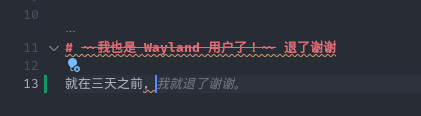

我也是 Wayland 用户了！ 退了谢谢
链接到标题

我就退了谢谢。在切换到 Wayland 前，我对他充满了满心憧憬，因为我有个 4K 屏幕而 X11 下（似乎）对多屏不同 DPI 的支持不是很好。
自从 2021 年底左右，我就一次又一次地切换到 Wayland 进行体验，即使每次都有一些新的 bug 被修复，但当时的整体感觉仍然不好。
直到前几天（四天前）我又一次尝试 Wayland，第一天下来，虽然体验到了一些 glitch，但整体还算可以接受。Wayland 带来的 4K 高分屏支持、高刷新率支持都是顶级的加分项。
退坑 链接到标题
但从第二天开始，各种各样的问题就浮现出来：
VSCode 无法使用输入法 链接到标题
我要写 blog 啊，没有中文输入法怎么行？
🍊：怎么用不了输入法
Ian：ozone
🍊：所以怎么办
Ian：在别的地方输入，然后 cut paste
Chromium 上游的 text_input_manager_v3 支持
Code Review 仍然在进行中，尚未合并。因此下游电子垃圾们只能慢慢等着（或者 XWayland）。直接导致 Chromium / Chrome / VSCode 在
native Wayland 环境下根本无法使用输入法。
注：Chromium / Chrome 可以通过使用 --gtk-version=4 启用 GTK4，通过构造一个假的（没错）GTK 窗口进行 “伪造” 输入法支持
有关输入法的更多内容，请戳 Chrome/Chromium 今日 Wayland 输入法支持现状
（内容引用于 2022 年 7 月，届时可能会更新，请留意）
KRunner 经常性无法调出 链接到标题
不知道什么原因。在经过一段时间之后，我就无法使用 Alt + Space 呼出 KRunner。
本人是 KRunner 重度用户，每次出现这种情况后需要使用
|
|
重启服务才能重新恢复正常，但过一段时间之后，问题仍会出现。
Such a bummer.
Global Application Menu 无法使用 Meta 键（Windows 徽标键）打开 链接到标题
同样是个不知道什么原因的问题。无法进行更多的分析。
Flameshot 无法正常使用 链接到标题
虽然说可以不用 Flameshot，但已经习惯了他的 annotation，换用 Spectacle 还是挺不适应的。
Latte Dock 彻底无法启动 链接到标题
同样，我不知道什么原因，在终端添加 -d debug 输出也并无有用的消息，gdb 现实为在 poll() 但没时间调查具体在 poll 什么。
VSCode / VMWare 屏幕闪烁 链接到标题
俩闭源软件也没什么好调查的
Wine 无法拖动文件进出 链接到标题
字面意思，无法拖动文件进出。我不是 wine 开发者，故而也不知道什么原因。
辣鸡微信 链接到标题
辣鸡微信无论是 wine Wayland 下还是 wine X11 下都十分难用，张小龙阖家欢乐。
结语 链接到标题
以上内容均为本人观点，由于技术有限，可能无法正确排除所有问题。
如果有人能提供以上问题的具体原因，或解决办法，欢迎 leave a comment，我将感激不尽。
在这之前我大概只好 Stuck with X11 了。